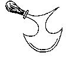
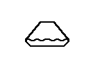
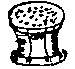
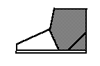

A punch is a tool used to make a hole in leather, by removing a plug of leather, as opposed to stabbing through or piercing leather. Also used to describe the action of a punch, as in �punching holes in leather�. Holme shows this as:

| A | B | C | D | E | F | G | H | I | J-L | M-N | O | P-Q | R | S | T | U-V | W-Z |
| International Language Terminology Cross-Reference | General Glossary of Footwear Types | ||||||||||||||||
Painting the stitches
Laving the stitches laying upon the Rann with white closing thread No longer done
to shoes. [Holme, 1688]
Paning
Using the thin, or flat part of the hammer to beat the leather into a flatter shape.
[Devlin, 1840]
Pantofle
(also Pantoble)
A post-medieval term for a slipper or a raised overshoe
Paring Board
(Other medieval spellings include Paring Bord)
The meaning here is unclear, and it is likely that this is either a cutting
board, or possibly it may be a small board used for trimming welts without
damaging the overleather. See Fender. [Lystyne lordys verament]
Paring knife (See Carving knife)
Parfleche
A term for a particular form of Rawhide, or Green Hide, today almost entirely referring to
untanned Buffalo hide, and the materials made from such material. There is an entire craft
associated Native American goods made with Parfleche manufacture.
Paste
Patten
(Other medieval terms include Clog, Clogge, Galache, Galoch, Galosh,
Golosh, Galoche, Galegge, Galliochios, Galloche,
Gaulish Shoes, Paten, Patyn, Trippe Latin: Calopodla,Calopedes,
Callopedium, Crepitum, Crepita)
These are all names for a variety of overshoes, made with wood, leather, or cork
platform soles, sometimes with bits of metal on the bottoms, intended to protect
the shoes from wet, cold, mud and pavement. They remained in use in one form or
another until the American Colonial period. Some items seen currently thought
of as Patens may in fact be sandals.
Pattern-connected sole
Sole contiguous with the upper, seen in shoes made between A.D. 600 to 1100. [Goubitz,
2001] (See One Piece Shoe)
Peacock Knife
Although I have not seen these, they have been described to me as being an
interpretation of the Trekent/Round Knife. In the case of these knives
the spike is also used as a knife for cutting curved angles [Alan Andrist,
email to
Medieval-Leather@Yahogroups.com, 17-18 March 2004]
.

PedanaPedula
(See Vamp)
Peen
(also Pane)
To beat out leather with the narrow end of the hammer; to shape the soles,
lay the stitches, or compress the leather.
Pegged construction
A method of attaching the treadsole (outsole) to the upper and insole by using rows of
wooden pegs to nail the pieces together. [Goubitz, 2001]
Pegging
Pegging on the heel pieces [Holme, 1688]
Piecing
(Other medieval
spellings include Pecyn, Pecyng, Latin: Repecio, Reb(r)occo,
Sarcto, Reficio. Modern terms include: Insert)
This could refer either to using smaller pieces of leather to build a larger
piece, such as a boot leg; or it may refer to clouting. There was some
disagreement between cordwainers and cobblers about whether piecing could mean a
whole quarter or only part of a quarter. A piece of leather which has been
added to the overleather to fill out or adjust the final shoe. There is also a
modern definition that has nothing to do with the archeological meaning (or
historical shoemaking).
Pike
(Other medieval spellings include:
Crackowes, Pouilaines Latin: Liripipium)
A point. Specifically the point on the toe of a shoe. In the 12th
century piked shoes appear to have been called pigases (pigaches in French), or
pigaci�
and pigati�.
In the later 14th century, the style was called �crackowe�, such as
�shoes with crackowe pikes�, then later �shoes with long crackowes�. In the
early 15th century, in France, the term �poulaine� referred to the
Polish fashion.
Pincers
A simple iron tool used in lasting, for hammering tacks and pulling them out.
After the Middle Ages, Pincers become increasingly more specialized into Pincers
and Nippers (See also Nippers):
Pinson
(Other medieval spellings include: Caffignon, Pinsone, Pin�on,
Pinsion, Pisnet, Puisnet, Pynson, Sokke. Latin:
Pedipomita, possibly Calceolus, Calceamesa Calceamen Pedibomita
Pedribriomita)
A kind of thin shoe, slipper or pump. Although they appear in the literature
from 1350 to around 1600, there is no clear contemporary description of them.
It maybe assumed that they are a slip on shoe held in place by fit, rather than
any fastenings.
Pipes
Folds that occur during the lasting process. [Devlin, 1840]
Pitch (Stitch Length)
The measurement of
stitch lengths per inch in a given seam. It is likely that this term is 19th
century in origin. [Thornton/Swann, 1983][Webber, 1989][Goubitz, 2001]
Pitch
Tar thickened and
purified by boiling. Tar is the caramelized sap from trees gathered in the
charcoal making process.
Platform Sole
A thick sole, generally originally of cork covered, to give additional height, usually
for fashion reasons [Thornton/Swann, 1983]
Platform sole
Shoe, mule or leather patten that is elevated by means of a cork or wooden mid-sole.
[Goubitz, 2001]
Plough (Feather Plough, Feathering Knife)
Polishing Bones
See Bones and Sticks.
Prick
To stick your awl
into the leather.
Pricked
Or Dividing. After Jiggering, the stitches are marked with a
special tool to further finish them. This helps to make the Crease in the
Welt [Devlin, 1840]
Pricking Iron
See Stitch Prick
Pucker Type (Pucker Seam)
A type of shoe that is similar to the center seam in that the sole wraps up around the
foot, but does not meet at the top in a single seam, but rather "puckers" up
around the sides.

PumpPunch
A punch is a tool
used to make a hole in leather, by removing a plug of leather, as opposed to
stabbing through or piercing leather. Also used to describe the action of a
punch, as in �punching holes in leather�. Holme shows this as:

Putting-on brushes
Brushes made of soft horsehair, used to apply shoe cream; it is advisable to use a
separate brush for each color. [Vass]
Quarreling
The meaning is
not clear, the use in context regards work a cobbler might do, and so may mean
cutting out holes in the old leather and piecing those holes with new leather;
or it may refer to sewing with a quarrel, or a square needle.
Quarter
A part of the
overleather. From the use of this term in context, it is pretty clear that the
forefoot was part of the quarters, which differs from later shoemaking usage in
which the quarters referred specifically to the rear part of the overleather;
the material which goes round the wearer's heel.
Quarter rubber
A piece of hard, non-slip rubber a quarter inch (6 mm) thick that is nailed to the top
piece of the heel. [Vass]
Quarter Tip
A segment let into the top piece at the outside back where the most wear occurs.
[Thornton/Swann, 1983]

Footwear of the Middle Ages - Glossary of Footwear Terminology P-Q,
Copyright � 1999, 2000, 2001, 2005 I. Marc Carlson.
This page is given for the free exchange of information, provided the author's name is
included in all future revisions, and no money change hands, other than as expressed in
the Copyright Page.